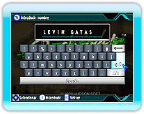
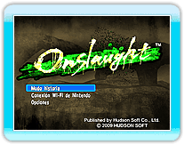
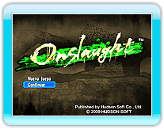

9 |
Empezar a jugar |
 |
|
En la Pantalla de título pulsa

Si es la primera vez que juegas, la siguiente pantalla te pedirá que introduzcas el nombre de jugador a utilizar durante el juego.
Los nombres pueden ser de hasta 13 caracteres de largo. (No se permitirán nombres que contengan lenguaje inapropiado.) Tras confirmar tu nombre de jugador, establece tu país de residencia en la Pantalla de selección de país. A continuación aparecerá la Pantalla de selección de juego. Escoge un modo con el puntero y confirma con

Si hay datos guardados, tras seleccionar "Modo historia" puedes elegir "Nuevo juego" o "Continuar". Elige "Nuevo juego" para empezar una nueva partida y "Continuar" para continuar una partida anterior.
|
 |
 |
 |